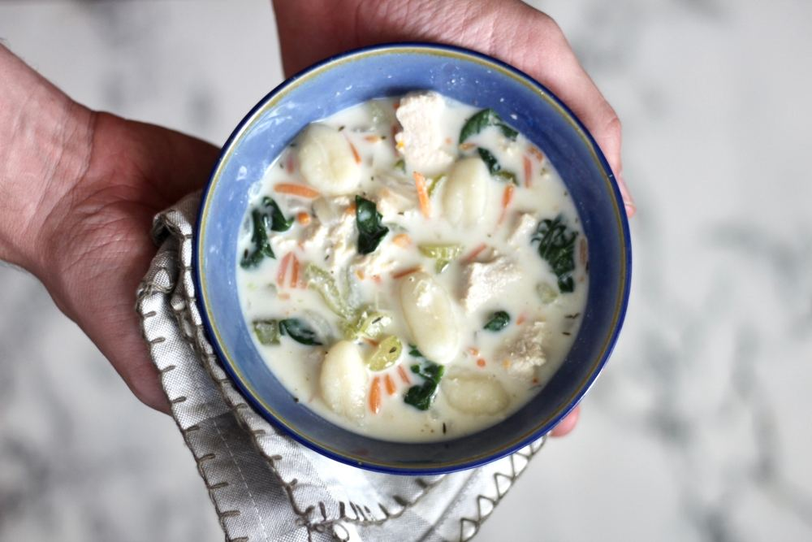

Macro
2 lbs raw chicken breast
cooking spray
1 onion, diced (250 g)
3 stalks celery, diced (157 g)
6 ounces shredded carrots (170 g)
2 tsp minced garlic
4 tsp chicken stock granules + 4 cups of water (or 4 cups of chicken stock)
1 tsp dried thyme
salt, to taste
fresh cracked pepper, to taste
1 17.6 ounce package potato gnocchi (Look for cauliflower gnocchi)
2 cups fat-free half and half (480 ml)
40 g baby spinach leaves
Instructions
1. Before you begin on the soup, cook chicken until no pink remains however you desire (I cooked mine in a pan with cooking spray, but choose whatever works best for you!). Cut chicken into bite-sized pieces and set aside.
2. Spray a large soup pot well with cooking spray. Add in diced onions, celery, shaved carrots, and minced garlic. Cook over medium heat for 5 minutes or until the vegetables become translucent.
3. Add to the vegetables the chicken stock granules and water, thyme, salt, pepper, and cooked chicken. Turn the heat to high and bring the soup to a boil.
4. Once the soup boils, add in the potato gnocchi. Allow to cook at a boil for about 2 minutes and then turn down the heat so the soup just simmers. Allow to simmer for 10 minutes, or until the vegetables are tender.
5. After 10 minutes, stir in the fat-free half and half and spinach. Allow the spinach to soften and wilt in the soup. Then taste the soup and add more salt and pepper, as desired. Serve and enjoy!
MyFitnessPal - “How we Macro Lighter Chicken & Gnocci Soup”
Servings 8. Nutrition for 1 serving
280 calories
1 Fat
35 Carbohydrates
27 Protein